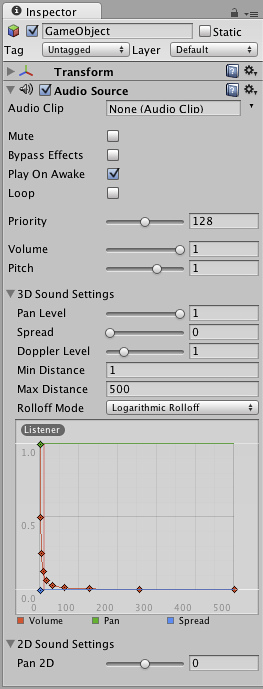

Assigning References
Reference properties are properties that reference other objects such as GameObjects, Components, or Assets. The reference slot will show what kind of objects can be used for this reference.

The Audio Clip property slot shows that it accept references to objects of type Audio Clip

Now an Audio Clip file is referenced in the Audio Clip property.
This type of referencing is very quick and powerful, especially when using scripting. To learn more about using scripts and properties, see the Scripting Tutorial on the Tutorials page.
Object references can be assigned to a reference property either by drag and drop or by using the Object Picker.
Drag and Drop
You can use drag and drop simply by selecting the desired object in the Scene View, Hierarchy, or Project View and dragging it into the slot of the reference property.
If a reference property accepts a specific Component type (for example a Transform) then dragging a GameObject or a Prefab onto the reference property will work fine provided that the GameObject or Prefab contains a component of the correct type. The property will then reference the component in question, even though it was a GameObject or Prefab you dragged onto it.
If you drag an object onto an reference property, and the object is not of the correct type, or does not contain the right component, then you won't be able to assign the object to the reference property.
The Object Picker
You can click on the small target icon next to a reference slot to open the Object Picker.

References to the Object Picker from the Editor.
The Object Picker is a simple window for assigning objects in the inspector after allowing you to preview and search those available.
Although the Object Picker is really easy to use, there are a few things you should be aware of. These are described below.

Anatomy of the Object Picker.
- Search: When there are lots of objects in the picker, you can use the Search field to filter them. This search field can also search objects using their Labels.
- View Selector: Switches the base of the search between objects in the scene and assets.
- Preview Size: This horizontal scroll bar lets you increase/decrease the size of your preview objects in the preview window. With this you can see more or fewer objects in the preview window at any moment.
- Preview Window: Here are all the objects that reside in your Scene/Assets folder filtered by the Search field.
- Object Info: Displays information about the currently selected object. The content of this field depends on the type of object being viewed, so if for example you pick a mesh, it will tell you the number of vertices and triangles, and whether or not it has UVs and is skinned. However, if you pick an audio file it will give you information such as the bit rate of the audio, the length, etc.
- Object Preview: This also depends on the type of object you are viewing. If you select a mesh, it will display you how the mesh looks, but if you select a script file, it will just display an icon of the file.
The Object Picker works on any asset you have in your project, which can be a video, a song, a terrain, a GUI skin, a scripting file, or a mesh; it is a tool you will use often.
Hints
- Use Labels on your Assets and you will be able to find them more easily by searching for them using the search field of the Object Picker.
- If you dont want to see the descriptions of the objects you can move the slider in the bottom middle of the preview window downward.
- If you want to see a detailed preview of the object, you can enlarge the object preview by dragging the slider in the bottom middle of the preview window.
Page last updated: 2012-08-13